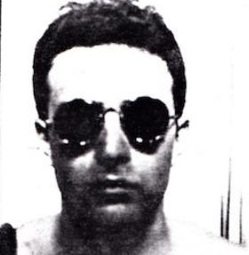
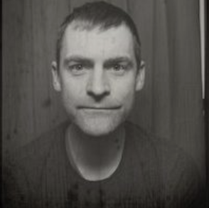

CLICK A FACE ON THE CLOCK ---------------vvv








BIOS & MORE DOWN BELOW
Sheri Reda Active Ensemble 1989 - ????
Sheri Reda is a person. She thinks, writes, tells stories, performs, and teaches other people to think, write, tell stories, and perform. Sheri also provides fully individualized ceremonies and officiates at them, though the Flow Ceremonies division of Flow and Moment, LLC.
Sheri Reda is a person. She thinks, writes, tells stories, performs, and teaches other people to think, write, tell stories, and perform. Sheri also provides fully individualized ceremonies and officiates at them, though the Flow Ceremonies division of Flow and Moment, LLC.
Lisa Buscani Active Ensemble 1989 - 1992
Lisa was an active ensemble member from 1989-1992, but since 2007 she keeps showing up like a bad penny. Lisa is a National Poetry Slam Champion and a nun in various incarnations of Late Nite Catechism. She has published one book of poetry, Jangle (Tia Chucha Press) and created three solo shows, Carnivale Animale, At That Time and Solid Citizen. Lisa has appeared on HBO, CNN, PBS and NPR. She currently teaches at DePaul University. Want to read her work? Check out her portfolio.
Phil Ridarelli BOARD MEMBER & Active Ensemble 1989 - 2014
Phil graduated from the Theatre School at DePaul University. Has improvised at Improv Olympic and with Cardiff Giant. He’s appeared in Chicago and regional theatres including Stage Left, Lifeline, Live Bait, American Theatre Company, Northlight, Madison Rep and in the European Premiere of Edward Albee’s “The Goat, or Who is Sylvia?” at Vienna’s English Theatre. He’s appeared in feature films, television, and commercials. He is a current alumni of The Neo-Futurists, joining the company six months after its creation. He’s worked at Jellyvision, producing and hosting their popular game You Don’t Know Jack, and continues working in interactive technology and voiceover for Interactions, creating intelligent virtual assistants for customer care, based out of Boston. He loves New Orleans, cooking, making cocktails, and his wife and two teenage sons… not necessarily in that order.
Ayun Halliday Active Ensemble 1989 – 1995 NY Neo-Futurist (Branch #1): 1995 – 1998
Ayun Halliday is a performer, playwright, and author of seven books, including No Touch Monkey! And Other Travel Lessons Learned Too Late. As a member of the Neo-Futurists from 1989-1998, she wrote, directed and performed in over 500 short plays and several full-length solo performances. Longer works include The Mermaid’s Legs, Fawnbook, Zamboni Godot, and NURSE. Ayun co-founded Theater of the Apes with her husband Greg Kotis, and hosts its monthly book-based variety show Necromancers of the Public Domain. ayunhalliday.com
Scott Hermes Active Ensemble 1992 – 1995 Scott’s last name is spelled like the Greek god of messengers and travelers and luck, but is pronounced like “worms” or “germs.” His first name is pronounced more or less the way you’d expect.
Greg Kotis Active Ensemble 1991 – 1995NY Neo-Futurist (Branch #1): 1995 – 1998
Greg Kotis is the same Greg Kotis who wrote Urinetown and Yeast Nation, among many other plays both short and long. Like his wife, Ayun Halliday, Greg was one of the original New York Neo-Futurists. He lives in NYC now and continues writing plays. We are all very proud of him.
Diana Slickman Active Ensemble 1993 - 2000
Diana Slickman is known to her friend as “Slick.” If you are her friend, you can call her that.
Diana is a Theater Oobleck ensemble member and has been in many of Oobleck plays, most recently Mickle Maher’s It is Magic. She used to be part of the solo performance group BoyGirlBoyGirl with fellow Neo alums Stephanie Shaw, David Kodeski, and Rachel Claff. She responds to deadlines and assignments and will read her work to strangers when asked.
Anita Loomis Active Ensemble 1995 - 2002
Anita Loomis is available in many flavors including but not limited to Mother, Writer, Actor, Triathlete, Chocolate, Voice Actor, Buddhist Macchicato, Weird Performance Artist, Cranky, Martial Artist, and Joyous. Limited editions flavors are available seasonally.
Steve Mosqueda Active Ensemble 1996 - 2010
Steven Edward Mosqueda is a Los Angeles native but considers Chicago home since 1990. He is a Neo-Futurist alum and a founding member of The Drinking & Writing Theater, exploring the connection between creativity and alcohol since 2002. He’s been to Texas a couple times and has yet to find good beer in that state. Baby!!!
Joe Dempsey Active Ensemble 2002-2004
Joe Dempsey was an “active” Neo-Futurist from 2002 – 2004. Brief, yes, but just like a DQ Blizzard chock full of theatre nuggets. As well as TMLMTBGB, Joe performed in Greg Allen’s The Last Two Minutes of the Complete Works of Henrik Ibsen (which also ran at Northlight and the NYC Fringe Fest), Greg Allen’s Strange Interlude (as part of Goodman Theatre’s Eugene O’Neill Festival), Bilal Dardai’s Contraption, and 44 Plays for 44 Presidents (made by a bunch of NFists folk). He’s also worked at most of the other theatres around Chicago like Steppenwolf, Chicago Shakes, Court, Lookingglass, and Victory Gardens as well as regional theatres like Milwaukee Rep, Cincinnati Rep, Centerstage (Baltimore), Kansas City Rep, St. Louis Rep, and City Theatre (Pittsburgh). He’s had some one-liners on some TV shows when they’ve come to town and none of the movies when they do. Joe is also a former member of American Theatre Company and The Second City National Touring Company and no, he doesn’t see a pattern.
Ryan Walters Active Ensemble 2002 – 2015 / Artistic Director 2009 – 2012
My Bio by Ryan Walters
For my bio I have done many things. For example, one summer I worked in a tourist information caboose for the Scottsbluff, Nebraska Chamber of Commerce. Another summer I worked at the Kawasaki factory in Lincoln, Nebraska doing injecting molding for jet ski’s.
I went to college at the University of Nebraska-Kearney, home of the fighting Antelopes, or Lopers. They struck fear into the hearts of their opponents, a fear not unlike being charged by a herd of rabid angry antelopes. In college I was in quite a few plays, and pictures from a couple of shows I was in more than 5 years ago still hang in a hall there. Maybe students look up and think, “Who is that guy?” or “Someday I’m going to be like him.” or “When are they going to take down those pictures?”
If you drive by Kearney, Nebraska on I-80 you will notice a gigantic arch spanning the interstate. It is quite a sight. My college ex-girlfriend (she was a studio arts major) worked on the arch installing displays and one of my college acting teachers can be found every summer at the arch as the Mountain Man! (I’m not making fun of him, he is a great director.) I’ve been a costumed character at a tourist attraction myself! I was a gigantic penguin during the holidays at Navy Pier and I terrified children and adults at the Navy Pier Haunted House. My favorite character was Nigel the Evil Librarian of DOOOOOOOOM!
Since moving to Chicago I’m proud to have taught arts in the AmeriCorps program at the Northwestern University Settlement House and HEY!!!!!!! Pay attention to this part:
I am a member of the theater group Barrel of Monkeys. We teach creative writing to 3rd through 6th graders in the Chicago public schools and perform their stories for their school. The Monkeys also do a show called “That’s Weird, Grandma” showcasing the work of students from residencies we have done over the past four years. LEARN MORE!! Check out www.barrelofmonkeys.org.
I’ve also had lots of fun working with Ego Productions. Check out www.egoproductions.org/theater/.
I contributed a one page comic to The New Graphics Revival Kit Issue. I really like comics and this magazine really captures the storytelling aspects of the medium. Check out www.graphicsrevival.com.
This is the end of my bio. Thanks for reading it.
Grade: B- Lacks depth
Bilal Dardai
Active Ensemble 2004-2016, Booking Coordinator 2009-2012, Artistic Director 2012-2015
Bilal Dardai is the name of the artist for which this paragraph has been written. The paragraph is designed to give you additional information about the artist, Bilal Dardai, that you might otherwise have to learn from conversation or other sources. In theory, the paragraph offers you an easy means to learn more information about the aforementioned artist, Bilal Dardai, which is why you have been reading this paragraph.
Until you realize, of course, that the paragraph told you next to nothing about Bilal Dardai, save that the paragraph was meant to be about Bilal Dardai, the artist for whom the paragraph had been written. So you continue reading the following paragraph in the hopes that this paragraph will present to you the information you were unable to find in the first paragraph.
But then the second paragraph ended as well with no more information about Bilal Dardai than had been found in the first paragraph. And ultimately, the frustration of having read two-plus paragraphs that did not give you the information you wished made you decide that you didn’t want to learn anything about this artist, Bilal Dardai, for whom no information was readily available despite there being a set of paragraphs designed to give you information about Bilal Dardai.
And the fourth paragraph was going to tell you everything, but once it realized you were gone it decided there was no point to it.
Tif Harrison Active ensemble 2011-2017 Booking Coordinator 2012 - 2015
Tif Harrison was an Ensemble Member of The Neo-Futurists from 2011 to 2018. In addition to writing and performing regularly in The Infinite Wrench, Tif was the creator and wrote for Saturn Returns, wrote and performed in the primetime shows The Miss Neo Pageant and The Food Show, directed Analog, and served as an editor for the company’s book, The Neo-Futurists: Body. She has performed at live lit events like The Paper Machete and Drinking & Writing’s Annual Beerfly Alleyfight. She lives in Chicago with her partner and her plants.
Malic White Ensemble from 2012-2019
Malic White is a writer, comedian and occasional actor who made weird art with the Neo-Futurists from 2012 to 2019.
Jeewon Wright-Kim Active Ensemble 2014-2017
Choosing Squirtle as a starter Pokémon since 1998.
Regretting my choice of KrNpLaYa89 as an AIM screen name since 2004.
Bending and snapping since 2007.
Teaching children to read and take care of each other since 2011.
Making two-minute plays about all of the above since 2014.